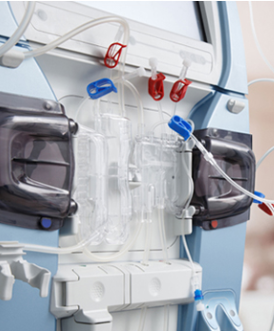
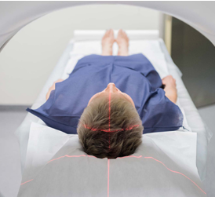

Industries
Overview or something
Automotive Electronics Manufacturer

Cars. Essential to much of the working population and their families all over the world. Whether they are used for “getting where you’re going” or “going in style”, there must be no compromise on safety and reliability. But now, with the rapid evolution of the industry, increasing consumer demands, and the race for the first autonomous vehicle – cars are getting smarter, more connected, and taking safety features to an unprecedented level.
Trends driving the car of the future are all enabled by more complex and intelligent electronics. Advanced driver-assistance systems (ADAS), human-machine interface (HMI), electrification, and increased vehicle to vehicle (V2V) and vehicle to infrastructure (V2I) connectivity rely on advanced electronics and sensing components. Electronics that must be produced at the highest quality levels, and quite literally, cannot fail.
Technologies that enable these trends are creating additional demand for those who can combine the rapid innovation and product introductions associated with consumer electronics with the rigorous engineering, testing manufacturing, and reliability demands of this industry. As a world-class automotive supplier, DPP’s global manufacturing, supply chain expertise, and industry partners help automotive customers quickly and strategically capitalize on technologies that enable autonomy like ADAS, HMI, connectivity, and electrification.
Working to AIAG quality standards at automotive grade manufacturing locations.
A 50+ year history of automotive electronic component design, manufacturing, and supply-chain management makes us a reliable and experienced partner for automotive manufacturers and suppliers worldwide. We deliver the highest-quality components and products, leveraging over 90 design and manufacturing sites in 23 countries. This global scale and reach also helps our automotive customers quickly and strategically bring their products to market.
Capital Equipment
Enabling Customer Innovation to Empower Tomorrow's Technology
Creating Certainty in Unpredictable Environments
DPP has broad, long-standing relationships with Industry leaders in large form factor capital equipment servicing a range of markets including Semiconductor, Automated Test, Energy delivery and Infrastructure, as well as a number of equipment providers to device manufacturers across the value chain.
Simplifying Complexity. Accelerating Innovation.
The race is on. The markets we serve are in the business of building smaller, faster, more powerful, electronic devices — the kind that drive the proliferation of technology into our everyday lives. The manufacturing equipment required to keep moving these technologies forward can be amazingly complex. Our partners rely on our leading cross section of capabilities to create value in designing and realizing products operating at the atomic level. The precision and tolerances required to support that demand that we build in repeatability and predictability at each step as our products are developed, manufactured, delivered, with defect prevention and elimination as our goal. We employ Lean Six Sigma tools and training in all of our facilities around the world led by Lean Black Belt certified operations teams. We give customers the ability to move at great speed, security and certainty even in the most complex and unpredictable environments, and to be the disruptors, not the disrupted, in their respective markets.
DPP serves the capital equipment sector with best-in-class manufacturing services. With over 50 years’ experience as a trusted innovation partner, we understand your business and apply our comprehensive portfolio of capabilities to accelerate your time-to-market and ensure your market leadership with:
These end-to-end capabilities adapt readily to your evolving business and product needs. Our flexible approach streamlines the entire product lifecycle, empowering you to focus on what matters most to your business, with the peace of mind that DPP has the rest covered.
Capital equipment OEMs face a number of challenges. They’re competing for a larger share of a smaller pool. The trend towards consolidation simplifies managing a long tail of supply chains and improves buying power, but it also means fewer partners and more offensive/defensive business plays. The drive to 3D NAND is accelerating the adoption of Flash technologies, and 14nm microarchitectures are gaining substantial ground. These types of advances disrupt the industry and typically require massive investments to overcome technological challenges.
To meet and take advantage of these challenges, DPP offers:
Comprehensive Technical Expertise
Applications
Semiconductor
Microelectronics
Cloud Data Centers
Design to Dust Solutions for Cloud Service Providers
Keeping up with growth is a challenge for all Cloud Service Providers. Complexity abounds - workloads are unpredictable, service offerings are continuously evolving, hardware and component supply can be uncertain, and cost is always a concern. Managing this complexity into an optimized and evolved deployment model is both the challenge and opportunity for you and your ecosystem.
DPP brings our breadth of supply chain, manufacturing and hardware development experience to the cloud ecosystem - encompassing full lifecycle requirements for the cloud datacenter from design to dust, we provide white-box hardware delivered via a customer-centric supply chain, factory integration services to accelerate time-to-deployment, and security conscious, environmentally responsible recycling and disposal.
Full lifecycle solutions for cloud data centers

Designed, Manufactured, and Cost-Optimized for the Modern Cloud Data Center
Rack integration is error prone and time consuming. When done at a colocation site, even something as simple as disposing of the packaging becomes a headache. Our comprehensive suite of services removes deployment complexity from your cloud supply chain and data centers:

FACTORY RACK INTEGRATION SERVICES
DPP provides these capabilities through a personalized consultative approach that prioritizes your technical and business requirements. Our ability to deliver flexibility on our own platforms or third- party platforms enables us to genuinely be a one-stop shop for hardware infrastructure delivery to the cloud data center.
Computing & Storage
Configure-to-order Capabilities, Supply Chain Agility and Regional Manufacturing to Minimize Upfront Costs and Reduce Lead Time

Accelerated disruption from new competitors, rapidly shifting customer expectations, and game-changing innovations that emerge with increasing speed - these demands drive the need for extremely nimble product development and the ability to bring breakthrough products to market as quickly and reliably as possible. Companies also must manage increasingly complex global supply chains, partner ecosystems, hidden operational risks and price pressures.
DPP has over 30 years of experience serving the computing & storage industry. Some of the world’s largest original equipment manufacturers rely on DPP for solutions from design through end-customer direct fulfillment. We make proactive, continuous investments in the initiatives that empower DPP to meet our clients’ product design and manufacturing requirements.
DPP builds enterprise computing and storage products ranging from entry-level servers to clustered storage systems. Nearly 80 percent of the products are built through sub-assembly, with DPP supporting over 6 million platforms of orderable configurations.
With our Content Solution Group, we provide integrated solutions to support fast-growing customer requirements in a variable cost environment.
Enterprise Servers and Mainframes
Enterprise Storage
Defense & Aerospace
Complete End-to-End Capabilities Guided by Innovation and Security
The New World of Aerospace & Defense
New technologies are accelerating innovation while significantly dropping the barriers to entry into the aerospace and defense market. The industry is expected to continue its growth trajectory, led by growing commercial aerospace production and strong defense spending. Today, more than ever, aerospace and defense companies need to accelerate the engineering lifecycle and work in an agile fashion to reduce cost and speed time to market while enhancing collaboration. At DPP Defense & Aerospace, we know that innovation isn’t a trend, it’s a necessity. We are honored and committed to designing, engineering, and building the electronics and precision mechanics technology that keeps millions safe around the world.
Mission-Critical Aerospace & Defense Electronics
DPP Defense & Aerospace specializes in mission-critical high-mix/low-volume electro-mechanical systems for Original Equipment Manufacturer (OEM) and military supply chains. As a proactive solutions partner, we provide complete end-to-end capabilities from design and engineering to manufacturing, test and supply chain management.
Highly-Complex Precision Machining
Complementing our electronic and mechanical services, DPP Defense & Aerospace delivers high-complex machined parts with advanced capabilities in precision CNC machining, grinding and lapping, special processes and non-destructive testing.
Cyber Security
With DPP Defense & Aerospace Cybersecurity, we protect intellectual and physical property for our customers, safeguarding national security and avoiding counterfeit supply chains.
Dedicated Facilities
Operating four dedicated and compliant sites with key certifications, our mission is to provide aerospace and defense OEMs with the confidence, capabilities and vision to innovate for the future.
Energy, Industrial & Building
With a Rich Portfolio of Capabilities, We Partner with Our Customers to Innovate Products, Disrupt Industries, and Capitalize on New Market Trends
DPP Energy, Industrial & Building Solutions
New technologies – and challenges – continue to emerge rapidly within the Energy and Industrial industries. With a rich portfolio of capabilities and 50+ years of manufacturing experience, we partner with our customers on deep technical and business roadmaps. By leveraging our proprietary supply chain software InControl™, customers meet regional standards, navigate tax and tariff requirements, and manage logistical challenges in emerging markets such as Brazil, China, India, and Mexico. From multi-market conglomerates to new energy and industrial companies, at DPP we’re delivering design, manufacturing, and supply chain solutions that enable our customers to solve challenges in these fast evolving sectors.
Solar
DPP has over 10 years of experience designing, manufacturing, and distributing inverters and balance-of-solution (BoS) components for solar Original Equipment Manufacturers (OEMs). This expertise lets us dramatically reduce development costs and execution risks while getting products to market faster.
Wind
From wind turbine generators (WTG) control systems and converters to nacelle control systems and PCBAs, DPP manufacturers high-level assembly components for the world’s leading wind-energy brands. DPP-manufactured components used in generation and controls are part of more than 20,000 wind installations operating today.
Smart Meters
With over 17 years in the market and more than 150 million DPP-manufactured smart meters operating in the world today, DPP is delivering technological and innovative solutions to leading smart grid and meter companies.
Industrial IoT
The Industrial Internet of Things (IIoT) is rapidly transforming companies, and opening up a new era of opportunities and challenges for Industrial OEMs. At DPP, we see a future where the intersection of people, data, and intelligent machines will deliver significant productivity improvements with over $300 billion in opportunity for solutions to this evolving space. Today, DPP is helping customers design, prototype, and scale industrial solutions in buildings, industrial sites, logistics, agriculture, and cities, working with all types of hardware and communication protocols. We provide the underlying access to technology, potential partnerships, and design and integration services to accelerate our customers’ connected journey. As a proactive solutions partner, our end-to-end hardware solutions include design, installation, and long-term maintenance.
Smart Building
DPP brings extensive experience in developing Smart Building products, helping customers from ideation and product development to testing and production. DPP also helps customers navigate the myriad of technology partners and solutions that exist in the marketplace.
Energy Storage
DPP engineers, builds and ramps some of the most innovative and complex Energy Storage System (ESS) products in the world. ESS solution providers benefit from DPP's unique combination of high-level assembly (HLA), power engineering and global manufacturing capabilities. DPP's experience includes hi-power Lithium-ion UPS and air-conditioned cabinets for DC battery racks/modules.
Industrial Automation
DPP supports both discreet and process automation enabling technology to leading OEMs within the $100 billion industrial automation market. We have deep experience in switches, controls, remote I/O, sensors, actuation, and human machine interface (HMI) technology. The breadth of this experience helps Industrial OEMs increase productivity and reduce cost. As a proactive solutions partner, DPP offers value-add engineering services, from ideation and product development to testing and production, actively collaborating with companies from startups to industry conglomerates in the industrial automation sector.
Oil and Gas
Building upon 50 years of manufacturing and supply chain excellence, DPP has emerged as a proactive solutions partner to leading Oil and Gas companies. From custom data capture applications to digitization and big-data analysis of global fleet operations, we partner with companies to bring mature industrial technologies and operations into the digital age. Our experience includes smart meter and sensor development with proven engineering expertise in DSP, RF, GPS, HMI, and ANSI standards that can be applied to most any application needed. Our world-class production facilities across the globe support all three sectors of the Oil and Gas production cycle to turn new visions into efficiency-enhancing applications. The DPP InControl™ platform offers an industry-leading service that provides Oil and Gas companies of all sizes with end-to-end visibility of their supply chain along with the advanced analytics to pinpoint risk and opportunities for profit. The result is a trusted engineering, manufacturing, and supply chain partner that accelerates time-to-market and lowers total costs.
Healthcare
Helping our Customers Harness Innovation and Technology to Solve Unique Challenges
DPP Healthcare is the largest global provider of healthcare manufacturing solutions in the industry.
Why does it matter that we are the largest provider of healthcare manufacturing solutions? Our customers benefit from decades of experience and an unmatched array of design, engineering, supply chain, process development and production solutions across the healthcare landscape. To every product line, we apply all our experience and refined processes so you can be assured that you are in good hands.
Our operating model is unique in healthcare manufacturing, and it features teams centered on each customer account (or “Business Unit”) to ensure deep domain expertise, close collaboration, and project prioritization. Today, DPP Healthcare is integrating innovative technologies into medical and consumer health devices to help our customers succeed in the new digital healthcare landscape.
Markets We Serve
Medical Devices
Our Medical Devices team works with leading medical brands to design and produce products across various domains including minimally invasive devices, blood management, cardiology, patient monitoring and neurology, among others. Our experts in design, engineering, NPI, tooling, injection molding, robotics and supply chain management work with your team to develop the optimal program from the drawing board to the loading dock. Our work in areas including robotic assisted surgery and minimally invasive devices are setting a new bar for solution which require complex vertical integration of technologies and process developments.
Diagnostics
The DPP Healthcare Diagnostics team works with leading brands to design, engineer and produce a broad range of diagnostic products in the areas of genomics and precision medicine. Diagnostic tools are becoming more sophisticated with added computing technology, data collection and chemical analysis. Less invasive, improved procedures like liquid biopsies are also gaining ground; driven by demand for increased access to remote testing and point-of-need diagnostics.
Pharmaceutical Delivery System
Our Pharmaceutical Delivery Systems (PDS) team is focused on injectables and inhalers. We work with leading pharmaceutical brands to continually develop more convenient, reliable drug delivery that offers comfort and confidence to your customers. DPP Healthcare also offers the new Qfinity™ autoinjector—an economical, reusable device in an environmentally sustainable model.
Networking
Enabling Products and Solutions that Safely and Securely Connect the World
Today, data and the networks that carry it form the lifeblood of commerce, and DPP's Networking Solutions group enables go-to-market solutions for companies that power the way the world communicates. DPP is dedicated to helping networking and networking security customers navigate these accelerated and highly competitive markets by innovating faster to stay ahead of the innovation curve.
By manufacturing through a single point of contact and accountability, DPP helps our customers bring switches, routers, firewalls, hyperconverged and other networking products to market with higher quality and cost-effectiveness. To provide our customers with creative solutions, we are also innovating well beyond the boundaries of traditional contract manufacturing, supporting such initiatives as Software Defined Networking (SDN), Network Function Virtualization (NFV), Networking as a Service, and providing the network backbone that connects the worldwide Internet of Things (IoT).
Why DPP?
Capabilities
Our dedicated facilities and Centers of Excellence provide rapid design, prototyping, advanced new-product-introduction techniques, and test services. Our end-to-end test methodologies ensure that products meet strict quality requirements at each phase of the lifecycle.
Printing
Advanced Design and Rapid Prototyping Enable Our Customers to Capitalize on Emerging Print Technologies
DPP Print
DPP is a world leader in all aspects of print manufacturing from pre-printing capital equipment and consumer/enterprise printers to commercial digital printing presses and emerging 3D printing technologies. Our cost-effective and comprehensive global solutions — from design and manufacturing to validation, supply chain management and distribution — consistently accelerate time-to-market, reduce execution risk and lower total landed costs.
A Proactive Solutions Partner
DPP’s Print sector engineers, builds and ramps industrial printers, mechanical and touchscreen controls, cartridges, automatic document feeders, scanners, and other print components. As a proactive solutions partner, DPP has won numerous supplier awards and has brought millions of multifunction printers to market. Customers take advantage of our advanced design and rapid prototyping capabilities in order to move quickly and capitalize on emerging print technologies and trends. To that end, a leading printing company has chosen DPP as a foundation development partner for its 3D printer product line.
DPP print expertise and capabilities include:
Our best-in-class, end-to-end services accelerate our customers’ time-to-market and ensure market leadership. From design and fabrication through testing and our proprietary supply chain software InControl™, DPP delivers technological and innovative solutions to the printing industry.